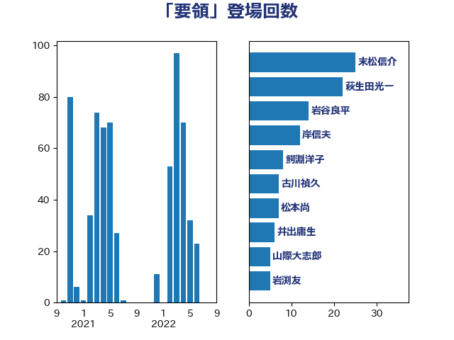

単語「要領」

| 末松信介 | 自由民主党 | 25 回 |
| 萩生田光一 | 自由民主党 | 22 回 |
| 岩谷良平 | 日本維新の会 | 14 回 |
| 岸信夫 | 自由民主党 | 12 回 |
| 鰐淵洋子 | 公明党 | 8 回 |
| 古川禎久 | 自由民主党 | 7 回 |
| 松本尚 | 自由民主党 | 7 回 |
| 井出庸生 | 自由民主党 | 6 回 |
| 山際大志郎 | 自由民主党 | 5 回 |
| 岩渕友 | 日本共産党 | 5 回 |
| 梅村みずほ | 日本維新の会 | 5 回 |
| 梶山弘志 | 自由民主党 | 5 回 |
| 田村智子 | 日本共産党 | 5 回 |
| 伊藤孝江 | 公明党 | 4 回 |
| 勝部賢志 | 立憲民主党 | 4 回 |
| 坂本哲志 | 自由民主党 | 4 回 |
| 小泉進次郎 | 自由民主党 | 4 回 |
| 尾崎正直 | 自由民主党 | 4 回 |
| 横沢高徳 | 立憲民主党 | 4 回 |
| 田村貴昭 | 日本共産党 | 4 回 |
| 高野光二郎 | 自由民主党 | 4 回 |
| 串田誠一 | 日本維新の会 | 3 回 |
| 堀場幸子 | 日本維新の会 | 3 回 |
| 塩村あやか | 立憲民主党 | 3 回 |
| 宮路拓馬 | 自由民主党 | 3 回 |
| 後藤茂之 | 自由民主党 | 3 回 |
| 木村英子 | れいわ新選組 | 3 回 |
| 柴田巧 | 日本維新の会 | 3 回 |
| 田中英之 | 自由民主党 | 3 回 |
| 神津たけし | 立憲民主党 | 3 回 |
| 舩後靖彦 | れいわ新選組 | 3 回 |
| 赤羽一嘉 | 公明党 | 3 回 |
| 金田勝年 | 自由民主党 | 3 回 |
| 阿部知子 | 立憲民主党 | 3 回 |
| 青柳陽一郎 | 立憲民主党 | 3 回 |
| ながえ孝子 | 無所属 | 2 回 |
| 上田清司 | 国民民主党 | 2 回 |
| 下野六太 | 公明党 | 2 回 |
| 丹羽秀樹 | 自由民主党 | 2 回 |
| 寺田学 | 立憲民主党 | 2 回 |
| 寺田静 | 無所属 | 2 回 |
| 小林鷹之 | 自由民主党 | 2 回 |
| 掘井健智 | 日本維新の会 | 2 回 |
| 武田良太 | 自由民主党 | 2 回 |
| 浮島智子 | 公明党 | 2 回 |
| 清水真人 | 自由民主党 | 2 回 |
| 田村憲久 | 自由民主党 | 2 回 |
| 穀田恵二 | 日本共産党 | 2 回 |
| 笠浩史 | 無所属 | 2 回 |
| 舟山康江 | 国民民主党 | 2 回 |
| 西村康稔 | 自由民主党 | 2 回 |
| 谷田川元 | 立憲民主党 | 2 回 |
| 野田聖子 | 自由民主党 | 2 回 |
| 鈴木俊一 | 自由民主党 | 2 回 |
| 長友慎治 | 国民民主党 | 2 回 |
| 青山大人 | 立憲民主党 | 2 回 |
| 三原じゅん子 | 自由民主党 | 1 回 |
| 中曽根康隆 | 自由民主党 | 1 回 |
| 井上哲士 | 日本共産党 | 1 回 |
| 伊波洋一 | 無所属 | 1 回 |
| 伊藤孝恵 | 国民民主党 | 1 回 |
| 佐々木さやか | 公明党 | 1 回 |
| 佐藤正久 | 自由民主党 | 1 回 |
| 倉林明子 | 日本共産党 | 1 回 |
| 加田裕之 | 自由民主党 | 1 回 |
| 勝目康 | 自由民主党 | 1 回 |
| 吉川赳 | 無所属 | 1 回 |
| 吉田とも代 | 日本維新の会 | 1 回 |
| 國場幸之助 | 自由民主党 | 1 回 |
| 塩川鉄也 | 日本共産党 | 1 回 |
| 塩田博昭 | 公明党 | 1 回 |
| 大串博志 | 立憲民主党 | 1 回 |
| 大家敏志 | 自由民主党 | 1 回 |
| 大島敦 | 立憲民主党 | 1 回 |
| 宮口治子 | 立憲民主党 | 1 回 |
| 宮本岳志 | 日本共産党 | 1 回 |
| 小池晃 | 日本共産党 | 1 回 |
| 小沼巧 | 立憲民主党 | 1 回 |
| 小西洋之 | 立憲民主党 | 1 回 |
| 山下芳生 | 日本共産党 | 1 回 |
| 山口壯 | 自由民主党 | 1 回 |
| 山本香苗 | 公明党 | 1 回 |
| 岡本あき子 | 立憲民主党 | 1 回 |
| 岬麻紀 | 日本維新の会 | 1 回 |
| 川田龍平 | 立憲民主党 | 1 回 |
| 斉藤鉄夫 | 公明党 | 1 回 |
| 橋本聖子 | 無所属 | 1 回 |
| 池田佳隆 | 自由民主党 | 1 回 |
| 浦野靖人 | 日本維新の会 | 1 回 |
| 熊野正士 | 公明党 | 1 回 |
| 牧島かれん | 自由民主党 | 1 回 |
| 田村まみ | 国民民主党 | 1 回 |
| 田野瀬太道 | 無所属 | 1 回 |
| 石川博崇 | 公明党 | 1 回 |
| 福重隆浩 | 公明党 | 1 回 |
| 秋野公造 | 公明党 | 1 回 |
| 自見はなこ | 自由民主党 | 1 回 |
| 葉梨康弘 | 自由民主党 | 1 回 |
| 藤巻健太 | 日本維新の会 | 1 回 |
| 藤木眞也 | 自由民主党 | 1 回 |
| 西岡秀子 | 国民民主党 | 1 回 |
| 赤池誠章 | 自由民主党 | 1 回 |
| 逢坂誠二 | 立憲民主党 | 1 回 |
| 道下大樹 | 立憲民主党 | 1 回 |
| 野田佳彦 | 立憲民主党 | 1 回 |
| 金子恭之 | 自由民主党 | 1 回 |
| 阿達雅志 | 自由民主党 | 1 回 |
| 高見康裕 | 自由民主党 | 1 回 |
| 高階恵美子 | 自由民主党 | 1 回 |
| 鶴保庸介 | 自由民主党 | 1 回 |